单元⑥ · 数据结构与算法
本单元目标：掌握复杂度、线性结构、树与图、排序和搜索，并能按步骤完成手算。例题与练习入口放在对应知识点后。题号沿用原单元5的编号，已有答题记录会继续显示。
1. 时间复杂度：看增长速度
大O记号描述随输入规模n增大，工作量的增长上界；通常不计算具体秒数。一次访问数组下标常记 ，遍历n个元素为 ，对每个元素再遍历n个为 。
二分查找每步把范围缩小约一半，比较次数约 ，因此为 。它要求数据有序或问题有合适的单调性质。找到一个位置后往数组中间插入，移动元素仍可能是 。
平均、最坏、摊还复杂度的含义不同。哈希表查找通常平均接近 ，但冲突严重等情况可退化；不能把平均性能说成所有情况下的保证。
读完这个知识点，接着练： 第5-11题
2. 数组、链表、栈、队列与哈希表
本节按公开题库与教材中的代表题型整理；下面算例和新增12题均为自编，不作为阿里官方原题或考频统计。每个知识点末尾都有就地算例和配套练习入口，读完即可接着做。
① 数组：地址与移动次数
数组连续存储，下标访问通常O(1)；保持顺序的中间插删通常O(n)。本节下标从0开始，长度n，且插入时容量足够、不计扩容：
| 操作 | 直接使用的式子 |
|---|---|
| 一维A[i]地址，首地址base，每元素w字节 | |
| R行C列的A[i][j]，按行优先存储 | |
| 同一矩阵按列优先存储 | |
| 在下标i处插入，原A[i]起后移 | 移动 个旧元素，允许 |
| 删除下标i并保持顺序 | 移动 个后续元素 |
带算例： 长度8，在下标2插入，移动原下标2～7，共6个；若独立地从原数组删除下标2，移动原下标3～7，共5个。“第3个元素”对应下标2；新元素本身的写入不计作移动旧元素。
地址例：A有3行4列，每数4 byte，A[0][0]地址1000，按行优先，则A[2][1]前面有 个元素，地址为1036。若下标从1开始，先减去下标起点再算偏移。
若所有插入位置0～n等可能，平均移动 个；若n个删除位置等可能，平均移动 个。以上都要求保持原顺序；若允许用末尾元素覆盖被删位置，结论会改变。
读完这个知识点，接着练： 第5-13题 · 第5-21题 · 第5-22题
② 链表：先找位置，再改指针
链表用指针连接节点，不要求节点在内存中连续。已知单链表节点p，在它后面插入新节点s：
原来：p → q
先做：s.next = p.next
再做：p.next = s
结果：p → s → q
若先执行 p.next=s，再执行 s.next=p.next，s就指向自己，原后继也无法从p继续访问。删除p后面的节点可先保存 q=p.next，再令 p.next=q.next（前提q存在；是否释放内存另按语言处理）。
复杂度看“已知什么”： 已知前驱后改固定数量指针是O(1)；从表头找第k个节点需要遍历，最坏O(n)。普通单链表只给待删节点、没有前驱时，不能笼统说删除总是O(1)；复制后继内容的技巧不适用于尾节点等情况。双向链表能直接找到前驱，但也要处理头尾边界。
读完这个知识点，接着练： 第5-23题
③ 栈：合法出栈、最小容量、方案数
栈后进先出（LIFO），只能从栈顶push／pop；peek只看栈顶、不弹出。递归调用与括号匹配常用栈。入栈顺序固定，不代表必须全部入完才出。 题目允许进出交错时，输出可能有很多种。
模拟法： 按目标输出从左到右看；栈顶就是目标则弹出，否则按输入顺序继续压入，直到目标到栈顶。如果目标已在栈内却被其他元素压住，就不能跳过栈顶取它。
例如依次输入1、2、3、4，目标输出2、1、4、3：
| 想输出 | 操作 | 操作后栈（左底右顶） | 目前最大深度 |
|---|---|---|---|
| 2 | 压1、压2、弹2 | [1] | 2 |
| 1 | 弹1 | [] | 2 |
| 4 | 压3、压4、弹4 | [3] | 2 |
| 3 | 弹3 | [] | 2 |
所以合法，最小栈容量是2。目标3、1、2、4则不合法：弹出3后，2压着1，无法先取1。判最小容量时，能按目标弹出就及时弹出，记录过程最大深度。
计数题另记一个结论： n个互异元素按固定顺序入一个容量无限的栈，允许任意合法进出交错，各元素恰进出一次，合法输出序列数为卡特兰数：
这里n是元素个数，是合法出栈顺序的数量；读作“从2n个中选n个”，是组合数，不是分数：。阶乘如 。代入n=3：。共有n次入栈、n次出栈；组合数先计全部操作排法，卡特兰公式进一步排除了“空栈出栈”等非法排法。
n=1、2、3、4、5时分别为1、2、5、14、42。n=3可以列出123、132、213、231、321，只有312不行，因此不是 。若限制容量、元素重复或规定全部入栈后才出栈，不能直接套该式。
读完这个知识点，接着练： 第5-12题 · 第5-24题 · 第5-25题 · 第5-26题
④ 栈应用：后缀表达式与括号
后缀表达式把运算符放在操作数后面，例如 (8-3)×2 写成 8 3 - 2 *。从左到右：数字入栈；遇运算符，先弹出右操作数b，再弹左操作数a，计算a运算b，再入栈。
本例栈依次为 [8] → [8,3] → [5] → [5,2] → [10]，结果10。减法、除法不能反过来。合法二元表达式的每次运算前至少有两个数，结束时恰剩一个数。
括号题：左括号入栈；右括号必须与栈顶的左括号类型匹配并弹出；结束时栈为空才正确。([)]虽然各类括号数量相等，但嵌套顺序不匹配。
读完这个知识点，接着练： 第5-27题
⑤ 队列：顺序与循环下标
普通队列FIFO：从队尾入、队头出；即使操作交错，出队相对顺序仍与入队一致。BFS常用队列。双端队列允许两端操作；优先队列按优先级取出（常用堆实现），两者都不能直接套普通FIFO结论。
本节循环队列统一约定： 数组长度M，front指向当前队头，rear指向下一次入队位置，留一个空槽区分空满。% M表示下标绕回0～M−1。
| 要求 | 公式／动作 |
|---|---|
| 当前元素数 | |
| 队空 | front=rear |
| 队满 | (rear+1)%M=front |
| 最大可存元素数 | M−1 |
| 入队（先确认不满） | 写A[rear]，再rear=(rear+1)%M |
| 出队（先确认不空） | 取A[front]，再front=(front+1)%M |
例：M=8，front=6、rear=2，占用下标6、7、0、1，共 个。入队2次后rear=4；再出队1次后front=7，现有 个。
为什么留空槽？若装满M个，rear绕一圈又等于front，会与空队列混淆；若额外维护size或满标志，也可使用全部M个槽。若题目把rear定义为最后一个元素的位置，或front指向队头前一位，先按定义画图，不能照搬这套公式。
⑥ 哈希：冲突、探测次数与平均查找长度
哈希函数h(k)给出键k的初始槽位。不同键落到同一槽叫冲突。链地址法在桶中保存多个记录；开放定址法继续找表内其他槽。线性探测 每次后移一格，超过表尾就绕回：，i=0、1、2……，m为表长。装载因子 ；合理散列且控制装载时查找通常平均接近O(1)，最坏仍可能O(n)。哈希表不天然按键排序。
完整带算例： m=7、h(k)=k%7，依次插入10、17、24、11，用线性探测。每访问一个槽计一次，包含首次槽位：
| 键 | 初始槽位 | 探测路径 | 最终位置 | 探测次数 |
|---|---|---|---|---|
| 10 | 3 | 3 | 3 | 1 |
| 17 | 3 | 3→4 | 4 | 2 |
| 24 | 3 | 3→4→5 | 5 | 3 |
| 11 | 4 | 4→5→6 | 6 | 3 |
最终下标0～6存 [空, 空, 空, 10, 17, 24, 11]。冲突次数不等于探测次数： 插入24发生2次冲突，但访问3个槽。
查找成功ASL（平均查找长度）： 本例无删除、无搬移，四个现存键等概率被查，次数是1、2、3、3，所以 。分母是被查的4个键，不是7个槽；若概率不等，应按概率加权。
查找失败ASL： 从初始地址开始探测，遇到从未占用的空槽才可停止，本节把最后一次访问空槽也计入。假设不存在的键均匀散列到0～6，则各起点次数为：
| 起点 | 0 | 1 | 2 | 3 | 4 | 5 | 6 |
|---|---|---|---|---|---|---|---|
| 失败探测次数 | 1 | 1 | 1 | 5 | 4 | 3 | 2 |
例如从3开始，要访问3、4、5、6、0共5次才遇空。故 。不能拿成功查找的次数做平均；若题设不计最后空槽或起点不等概率，须按其口径重算。
删除陷阱： 直接把槽4的17改成“从未占用的空槽”，会使查24时在槽4提前停止，漏掉槽5的24。可用删除标记（查询经过标记继续探测），或正确重整探测簇；不是随便清空就结束。连续占用形成的聚集会拉长探测路径。
来源与练习范围：牛客循环队列判空判满题型、牛客同哈希值探测次数题型；方法参考Princeton栈与队列、OpenDSA循环队列、OpenDSA线性探测。不同教材的指针约定可能不同，本节和配套题均明确写出约定。
读完这个知识点，接着练： 第5-30题 · 第5-31题 · 第5-32题
3. 树、堆与图：性质、手算与典型题
先掌握下面的基础手算题型。每个知识点后直接给例题和解法，再接可作答的练习；例题为自编，公开题源和教材依据见节末。
① 二叉树：节点数、叶子数与高度
树是连通无环的结构，n个节点有n−1条边。二叉树每个节点最多两个孩子，且区分左右。本节“节点的度”指孩子数；分别是有0、1、2个孩子的节点数量，就是叶子数。
| 场景／条件 | 直接使用的结论 |
|---|---|
| 任意非空二叉树 | ， |
| 根在第1层，树共有h层 | 第i层最多 个；全树最多 个，最少h个（链） |
| 满二叉树：本节指每层都填满 | h层恰有 个节点、 个叶子 |
| 完全二叉树：前面各层填满，末层从左连续填 | n个节点的层数 ；叶子数 |
表示向下取整，表示向上取整。高度若按“边数”定义，比这里的层数少1。完全二叉树不一定是满二叉树，也不自动满足BST或堆的大小关系。
叶子公式怎么来？ 每条边都从一个父节点连向孩子，因此边数也等于 ；与 相等，消去相同项就得 。
例题1： 一棵二叉树有7个双孩子节点、4个单孩子节点，共多少节点？叶子数7+1=8，总数8+4+7=19。
例题2： 完全二叉树有10个节点，共几层、几个叶子？前三层最多填7个，第4层再填3个，所以4层；按层序从1编号，有孩子的节点是1～5，叶子是6～10，共5个。节点5只有左孩子10，因此单孩子节点有1个。
② 遍历：写出顺序，由顺序还原树
先序是根→左→右，中序是左→根→右，后序是左→右→根；这些规则要递归用于每棵子树。层序则逐层从左到右，常用队列。
节点值互异时，先序＋中序或后序＋中序可以唯一还原普通二叉树：先序首项／后序末项确定根，再用根把中序切成左右子树，继续重复。只给先序＋后序一般不够：A只有左孩子B或只有右孩子B，先序均AB、后序均BA。
例题： 先序ABDECF，中序DBEACF，求后序。
A
/ \
B C
/ \ \
D E F
先序首项A是根；中序在A两侧切成DBE和CF。左边的根是B，孩子为D、E；右边的根是C，右孩子为F。所以后序是 DEB＋FC＋A＝DEBFCA，层序为ABCDEF。
读完这个知识点，接着练： 第5-35题
③ BST、AVL与红黑树：看图理解查找与平衡
三者都满足BST的大小关系；区别在于是否、怎样控制树高。先学BST如何沿树查找，再看AVL和红黑树如何避免树变成一条长链。本节键互异。
BST：小的向左，大的向右
对每个节点，整个左子树的键都小于它，整个右子树的键都大于它。不能只比较直接孩子：例如根为10，左孩子为5，但5的右孩子是12，仍然违反BST规则。
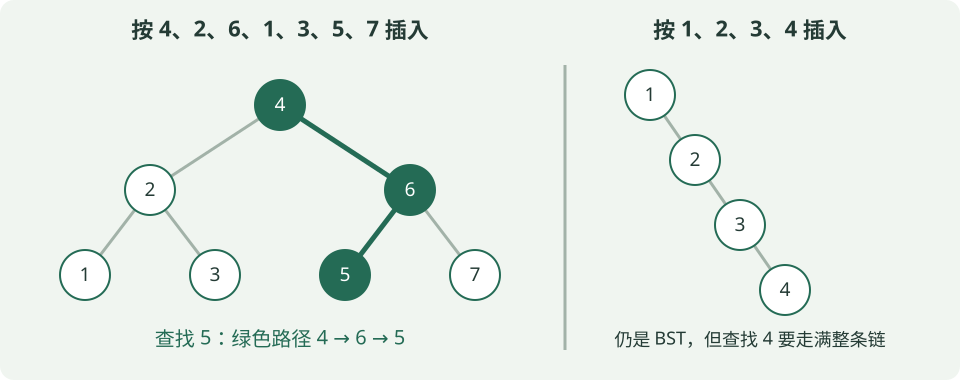
- 查找5： 比4大→向右到6；比6小→向左到5；相等即找到，共访问3个节点。若走到空位置还未找到，就是查找失败。
- 插入： 同样沿大小关系走到空位置，再接上新节点。图左由4、2、6、1、3、5、7依次插入得到；中序遍历为1、2、3、4、5、6、7。
- 退化： 图右依次插入1、2、3、4，每次都往右走。查找4要访问全部4个节点；n个节点时最坏O(n)。查找成本为O(h)，h是树高。
删除分三种： 无孩子，直接删；只有一个孩子，让孩子接替它；有两个孩子，用**中序后继（右子树最小值）**或前驱替换，再删除被拿走的那个节点。后继不一定是右孩子，要从右孩子继续一路向左找。
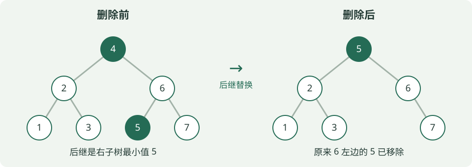
例题： 上图删4后，根变为5，6的左孩子变空，中序为1、2、3、5、6、7。对删除前的7节点树，所有键等概率成功查找时，平均访问次数为 ：第1层1个节点各需1次，第2层2个各需2次，第3层4个各需3次。
读完这个知识点，接着练： 第5-36题
AVL：每个节点的两侧高度最多差1
AVL是带高度平衡约束的BST。这里空树高度0、叶子高度1，平衡因子 ；每个节点都必须满足BF∈{−1,0,1}。只看根平衡还不够。
插入时先按BST插入，再从新节点向上找第一个失衡节点z。根据从z出发的两步方向，分为下面四类；L是左、R是右，名称表示失衡路径，不是旋转方向。
| 插入失衡类型 | 三个键的最小例子 | 如何修复 |
|---|---|---|
| LL：左孩子的左侧增高 | 30、20、10 | 对z右旋 |
| RR：右孩子的右侧增高 | 10、20、30 | 对z左旋 |
| LR：左孩子的右侧增高 | 30、10、20 | 先对左孩子左旋，再对z右旋 |
| RL：右孩子的左侧增高 | 10、30、20 | 先对右孩子右旋，再对z左旋 |
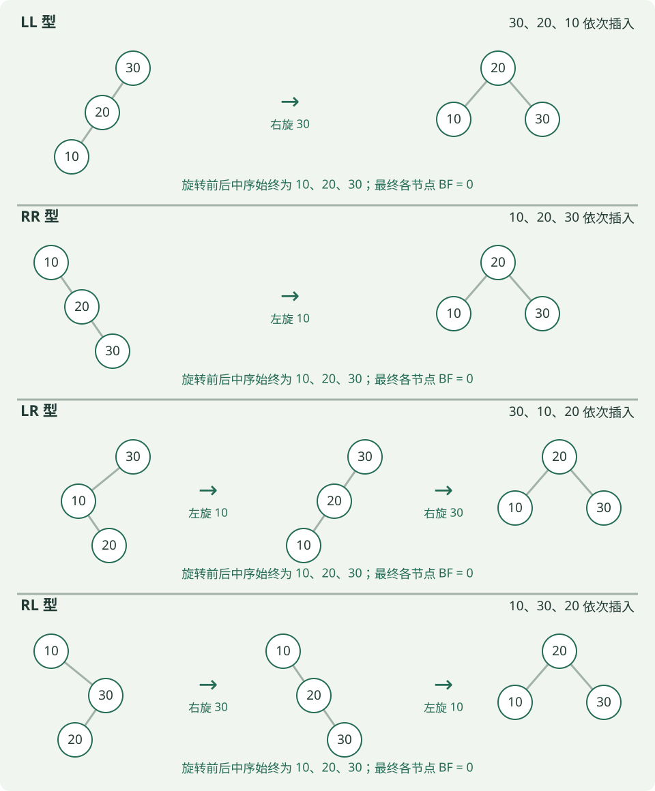
旋转不是交换键值，而是改连接。 右旋让左孩子升为子树根，原根下移到右侧；若升上来的节点原有右子树，要交给原根作左子树（左旋完全对称）。这样旋转前后中序顺序不变，仍满足BST。
例题： 依次插入30、10、20。插入20后，30左子树高2、右侧空树高0，BF=2；路径30→10→20为LR。先对10左旋，再对30右旋，得到根20、左10、右30，BF均为0。不是直接对30右旋一次。 AVL的查找、插入、删除最坏均为O(log n)；删除后也要向上检查，可能修复多层。
红黑树：用颜色规则约束树高
红黑树也是BST；它不要求每个节点左右高度差≤1，而是维护下面五条规则：
- 每个节点为红或黑。
- 根为黑。
- NIL空叶子为黑：指缺失孩子对应的空节点，不是“存有数据、没有孩子的节点”。
- 红节点的孩子必须为黑，即不能出现连续两个红节点；黑节点可以连黑节点。
- 从任一节点到其所有后代NIL的路径，黑节点数相同；路径总长度不必相同。
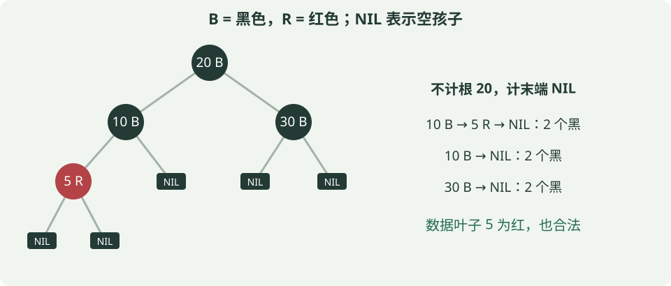
例题： 图中约定黑高bh(x)“不计x自身，计末端NIL”。从20走10→5→NIL，黑节点为10、NIL；走10→NIL或30→NIL，也各有2个，所以bh(20)=2。把5改黑，经过5的路径就多一个黑节点，反而不合法。题目采用其他计数约定时，先统一是否计起点和NIL。
插入怎么调整？ 常见标准红黑树先按BST插入，新节点涂红（不增加路径黑节点数）。父亲为黑则无需修复；父亲为红时，看“叔叔”——父亲的兄弟，空叔叔也算黑：
| 情况 | 调整思路 |
|---|---|
| 父红、叔红 | 父与叔变黑，祖父变红；继续向上检查，最后把根变黑 |
| 父红、叔黑，呈LL／RR直线 | 旋转祖父，并交换原父与祖父的颜色 |
| 父红、叔黑，呈LR／RL折线 | 先旋转父亲转成直线，再按上一行处理 |
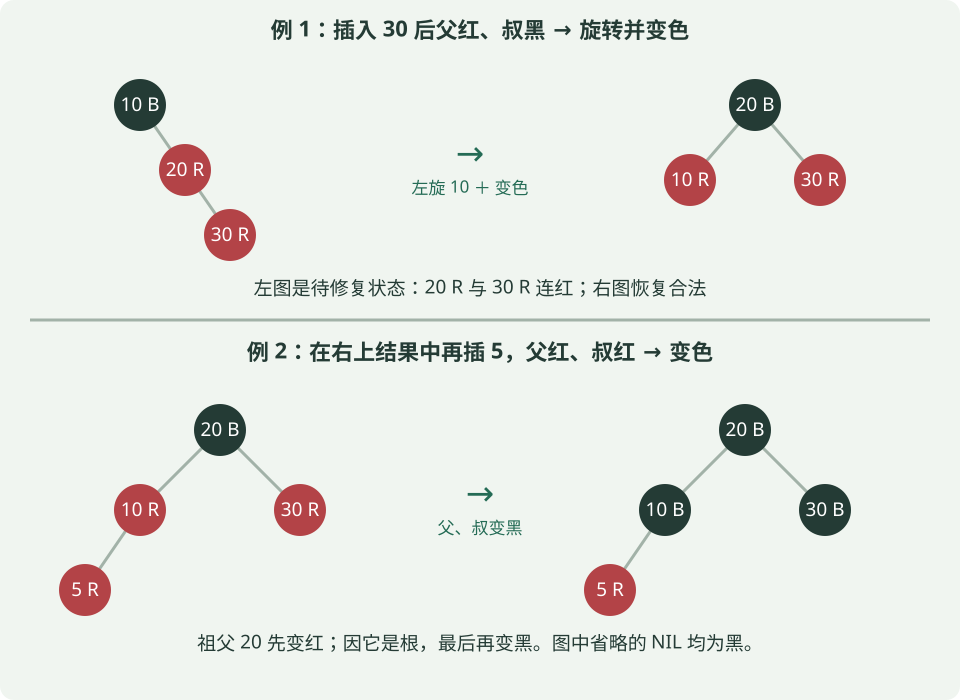
例题： 从空树依次插入10、20、30，插30后父20红、叔NIL黑，是RR。对10左旋，20变黑、10变红，最终20黑为根，10和30红为孩子。若在此基础上再插5，则父10与叔30都红，按图下半部分变色即可。
删除先记住原因： 按BST删除后，若原位置少了一个黑节点，某些路径的黑节点数就不一致，需要结合替补节点、兄弟及其孩子的颜色，通过变色／旋转恢复；不能把“删除黑节点”当作普通BST直接删完。
三种树的结论放在一起记
| 对比 | 普通BST | AVL | 红黑树 |
|---|---|---|---|
| 共同规则 | 左子树小、右子树大 | 同左 | 同左 |
| 额外约束 | 无 | 每个节点左右高度差≤1 | 不连红、各条路径黑节点数相等等颜色规则 |
| 最坏查找／插入／删除 | O(n) | O(log n) | O(log n) |
| 调整手段 | 不自动平衡 | 更新高度／BF、旋转 | 变色、旋转 |
| 看图时先检查 | 全部子树大小关系 | 大小关系＋每个节点BF | 大小关系＋颜色＋每条NIL路径 |
都不要求是完全二叉树，也不要求左右节点数相等。 AVL限制更严格；红黑树用较宽松的规则保证树高仍为O(log n)，不能因此说它退化时查找也是O(n)。只比名称也不能断言谁在所有场景下更快。
本小节方法核对：Cornell AVL讲义、Dartmouth红黑树讲义。图与数值例题为自编，红黑树采用一般规则，不额外要求红链接左倾。
④ 二叉堆：调整过程与Top-k
堆同时满足完全二叉树的形状和父子大小关系。最小堆父节点不大于孩子，最大堆相反；堆顶是最值，但左右子树和底层数组不必全局有序。以下数组按层序存储、下标从0开始：节点i的孩子为2i+1、2i+2（下标须小于元素数），非根节点的父亲为 。
插入：先放数组末尾，再与父节点比较并上浮。弹出最小值：末尾元素补到根，依次与两个孩子中较小者交换并下沉。取顶O(1)，调整O(log n)（不计数组扩容）；自底向上建堆O(n)，逐个插入建堆最坏O(n log n)。
例题1： 最小堆 [2,5,4,9,7,6] 插入1。先看清：这个数组按层序记录树，从上到下、每层从左到右；数组里挨着的数，不一定是父子。
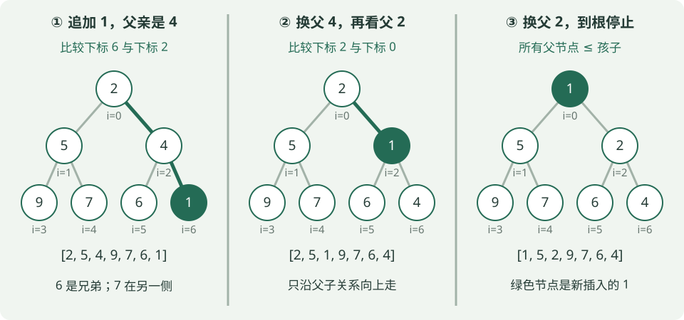
为什么先与4交换，不从6或7开始？
- 先把1追加到下标6，填在4的右孩子位置，保持完全二叉树形状。它的父亲下标为 ，而
a[2]=4。6是它的左兄弟，7是5的右孩子，都不是它的父亲。 - 最小堆要求“父≤子”。现在4>1，只有新接上的这条父子边违反规则，所以交换1和4：
[2,5,1,9,7,6,4]。交换的是两个位置上的值，树的连接不变。 - 1来到下标2，它的新父亲下标为 ，值为2。因为2>1，再交换，得到
[1,5,2,9,7,6,4]。1已到根，停止。
记法：插入时沿“新节点→父亲→祖父”上浮，不是从数组末尾逐个向前比较。 原来的堆已经合法，只需修复这条祖先路径；若中途发现父≤当前值，就可以提前停止，不必每次都升到根。
若从原堆独立地弹出2，先以末尾6补根得 [6,5,4,9,7]，与较小孩子4交换，得到 [4,5,6,9,7]。两种操作不是把数组直接排序。
Top-k记法： 保留最大的k个数，用大小k的最小堆；堆顶是当前入选者中最小的“门槛”。堆满后，新数大于门槛才替换。保留最小的k个数则反过来用最大堆。扫描通常O(n log k)（k≥2），额外空间O(k)；若要求最终结果有序，还要排序这k个数。
例题2： 从5、1、9、3、8中保留最大的3个：前三个形成最小堆 [1,5,9]；3替换1成为 [3,5,9]；8替换3成为 [5,8,9]。最终第3大是堆顶5。
读完这个知识点，接着练： 第5-14题 · 第5-37题 · 第5-38题
⑤ 哈夫曼树：带权路径长度WPL
先把权值理解成“出现次数”。 假设A、B、C、D分别出现2、3、7、9次，想用二叉树给它们编码：每走一条边记一个0或1，根到某字符叶子的路径就是它的编码。路径越长，每次出现就要用越多位；因此希望出现多的字符少走几步，让总编码长度尽量小。
WPL就是“次数×每次要走的步数，再全部相加”：
是第i个原始叶子的权值，是从根到该叶子的边数。根到孩子算1步，不是把经过的节点个数算进去。权值也可以表示其他成本；这里用出现次数帮助理解。对于给定的正权值，WPL最小的二叉树称为哈夫曼树，可按下面的方法构造。
怎么把树搭起来？每轮选当前最小的两个，给它们加一个共同父节点，父节点值为两者之和；再把这棵子树作为整体放回候选。
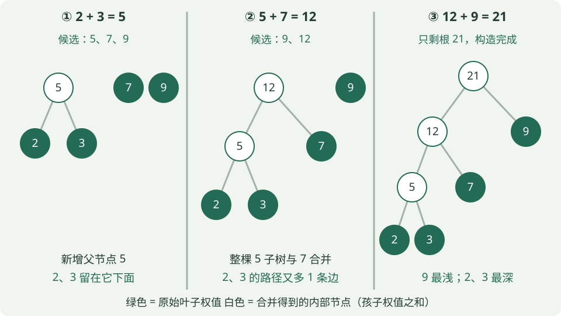
| 轮次 | 合并前的候选权值 | 取最小的两个 | 合并后放回候选 |
|---|---|---|---|
| 1 | 2、3、7、9 | 2+3=5 | 5、7、9 |
| 2 | 5、7、9 | 5+7=12 | 9、12 |
| 3 | 9、12 | 9+12=21 | 21，只剩一棵树，结束 |
注意：2、3没有消失，它们仍挂在5下面。 下一轮拿5去合并，是把整棵子树接上去。新生成的5也必须参与下一轮比较，所以第二轮选5和7，不是继续选原来剩下的7和9。这里不要求BST的“左小右大”。
对着最终的树算WPL： 原始权值2、3、7、9是叶子；5、12、21是内部节点，不作为新的叶子另加一遍。
| 原始叶子权值 | 从根到它的路径 | 边数 | 对WPL的贡献 |
|---|---|---|---|
| 2 | 21→12→5→2 | 3 | 2×3=6 |
| 3 | 21→12→5→3 | 3 | 3×3=9 |
| 7 | 21→12→7 | 2 | 7×2=14 |
| 9 | 21→9 | 1 | 9×1=9 |
所以 WPL=6+9+14+9=38。在字符出现次数的例子中，就是这21次字符出现共需38位编码。若4个字符都放在深度2，则总成本为(2+3+7+9)×2=42；图中把权值9放浅些，虽然2、3变深，总成本却更低。
为什么也能直接算5+12+21？ 每加一个父节点，它下面的所有原始叶子都比之前多走1条边：
- 合并2和3：两片叶子各多1步，新增成本2+3=5。
- 合并5和7：5下面的2、3，以及7都各多1步，新增成本2+3+7=12。
- 合并12和9：所有叶子又各多1步，新增成本2+3+7+9=21。
因此 WPL=所有合并结果之和=5+12+21=38。这和上表是同一笔成本的两种算法，不能再把两种结果相加。根权值21只表示原始权值的总和，不是WPL。
做题记住： 每次取当前最小的两个→合并后放回→累加每次的合并值。左右孩子互换不改变深度和WPL；若约定左边0、右边1，则会改变具体编码。图中权值9的编码为1，权值2的编码为000，正好分别是1位、3位。
读完这个知识点，接着练： 第5-39题
⑥ 图：度数、存储与BFS／DFS
这一小节始终用同一张图：5个顶点A、B、C、D、E，5条无向边AB、AC、BD、CE、DE。无向边AB可以从A走到B，也可以从B走到A；若是有向边A→B，则只能按箭头方向走。
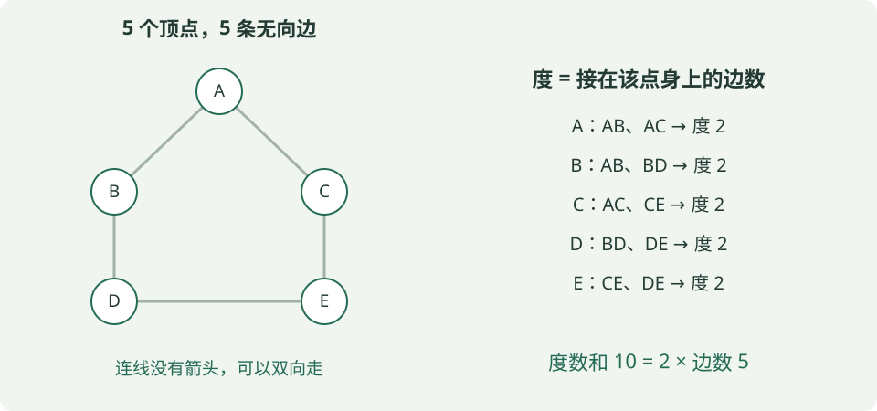
先看懂“度”和“边数”在数什么
顶点的度，就是有几条边接在它身上。 例如A连着AB、AC，所以度为2；这张图的5个顶点度都为2。度数和是10，但边只有5条：每条无向边都在两个端点各被数了一次，所以 度数和=2E。V表示顶点数，E表示边数。
有向图要分开数：箭头进入一个点，记它的入度；从它出发，记它的出度。例如只有A→B、A→C时，A出度2、入度0，B和C各入度1；每条边贡献一次出度、一次入度，所以入度和=出度和=E。
| 条件 | 最多有多少条边 | 为什么 |
|---|---|---|
| 简单无向图 | 每个点最多连其余V−1个点，但AB与BA是同一条边，要除以2 | |
| 简单有向图，允许相反方向各一条 | 每个点可向其余V−1个点连边，A→B与B→A是不同边 |
“简单图”在这里指无自环、无重边：自环是A连自己，重边是同一连接重复出现。上面的图有5条边，却有环A→B→D→E→C→A，所以图不一定是树；图也不一定连通。
例题： 6个顶点的简单无向图，度数和14，则E=14/2=7；最多边数6×5/2=15。7条边不能保证连通，例如4个顶点两两相连有6条边，另2个顶点单独相连再添1条边，仍分成两块。
同一张图，如何存进计算机？
邻接表：给每个顶点列一份“直接邻居名单”。 上图可以存成：
A: B, C
B: A, D
C: A, E
D: B, E
E: C, D
AB虽只有一条边，但A的名单写B、B的名单也写A，因此无向边在常规邻接表中存两份。本例是5份名单、10个邻居条目；一般空间为O(V+2E)，也就是O(V+E)。这里的邻居指“一步能到”，不是所有可达的点。
邻接矩阵：用一张V×V的表，记录任意两个点是否直接相连。 本例1表示有边，0表示无边：
| 行→列 | A | B | C | D | E |
|---|---|---|---|---|---|
| A | 0 | 1 | 1 | 0 | 0 |
| B | 1 | 0 | 0 | 1 | 0 |
| C | 1 | 0 | 0 | 0 | 1 |
| D | 0 | 1 | 0 | 0 | 1 |
| E | 0 | 0 | 1 | 1 | 0 |
例如第A行、第B列为1，对应AB；第A行、第E列为0，表示没有直接边AE，不代表A走不到E。无向图的矩阵对称，无自环时对角线为0。无论实际有多少边，都保留V²个格子，所以空间O(V²)。
例题： 查A与E是否直接相连，矩阵直接看一个格子即可；用普通邻接表则检查A的邻居名单。若要列出A的全部邻居，邻接表只读B、C两个条目，矩阵则需扫描A行的5个格子。
BFS：先走完近的一层，用队列记“待处理的人”
下面约定从A出发，每个点的邻居按字母升序检查。visited表示“已经发现过”，BFS在入队时就标记，避免同一个点被重复加入队列。队列先进先出，左端出队、右端入队。
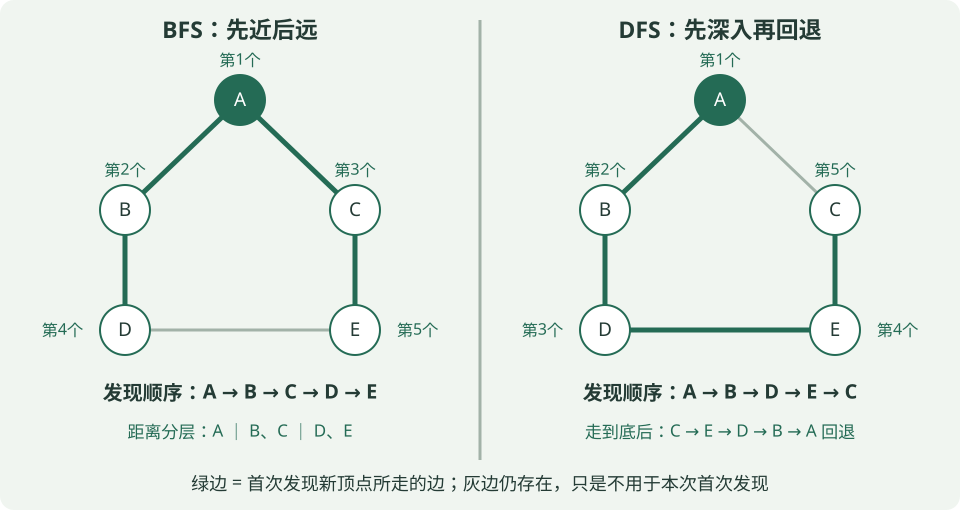
| 取出谁处理 | 按字母顺序检查邻居，发生什么 | 处理后的队列（左边先出） |
|---|---|---|
| 初始化 | 发现A，标记并入队 | [A] |
| A | B、C都未发现，依次标记入队 | [B, C] |
| B | A已发现，跳过；D未发现，入队 | [C, D] |
| C | A已发现，跳过；E未发现，入队 | [D, E] |
| D | B、E都已发现，均跳过 | [E] |
| E | C、D都已发现，均跳过 | []，结束 |
所以首次发现顺序为 A、B、C、D、E。尤其注意处理D时，E虽然还没出队，但已经被C发现并入队，不能再入队一次。
为什么能求最少边数？ 从A出发，第0层是A，第1层是B、C，第2层是D、E。队列让第1层处理完才轮到第2层，因此不会漏掉更短的路线。首次发现E的是C，沿发现关系回溯得到 A→C→E，共2条边。这适用于无权图，或所有边权相同且为正的情况；边权不同时不能用层数代替总权重。
例题提醒： 遍历顺序ABCDE表示“先后访问了谁”，不表示一条A→B→C→D→E的路线——图中甚至没有BC这条边。路径要沿实际存在的边走。
DFS：选一条路深入，走不动再退回来
递归DFS进入一个点时就标记访问，再依次递归访问尚未访问的邻居。仍从A出发、按字母升序检查邻居：
- A的邻居是B、C，先选B；C留到返回A后再检查。
- 到B，跳过已访问的A，进入D。
- 到D，跳过B，进入E。
- 到E，邻居C、D中先看C，它未访问，进入C。
- 到C，A、E都已访问，无路可继续，于是沿递归调用退回E→D→B→A。回到A时，C已在刚才的深入过程中访问过，也跳过，结束。
首次访问顺序为 A、B、D、E、C；回退经过旧节点，不把它再次记进访问序列。递归调用栈记住“从谁那里来、返回后继续检查谁”，也可以用显式栈实现。
对比例题： DFS第一次到E沿A→B→D→E走了3条边；BFS找到A→C→E只需2条边。DFS关注“先深入”，所以首次找到的路径不保证最短。图有环，若没有visited，就可能沿环不断重复走。
最后记住两个边界： 不指定邻居顺序时，BFS／DFS序列可能不唯一，但BFS求出的最少边数距离不变；从一个起点只遍历可达部分，若要遍历整张非连通图，需要再从未访问顶点启动。
| 完整遍历的存储方式 | BFS／DFS的时间复杂度 | 成本来自哪里 |
|---|---|---|
| 邻接表 | O(V+E) | 每个顶点处理一次，每个邻居条目检查一次；无向边检查两次不改变数量级 |
| 邻接矩阵 | O(V²) | 每个顶点都要扫描整行的V个格子，找出邻居 |
读完这个知识点，接着练： 第5-15题 · 第5-40题 · 第5-41题
⑦ 最短路：Dijkstra如何手算
边权不同时，路径代价是沿途边权之和。Dijkstra适用于所有边权非负的图。先令起点距离0、其余为无穷；每轮选尚未确定的节点中距离最小者u，再尝试经u更新邻居v：
d[v]是目前找到的起点到v的最小代价，w(u,v)是边u→v的权值。“松弛”就是比较原路线与“先到u、再走到v”哪条更短。不是只挑眼前最小的一条边。 一般含负权图不能直接套Dijkstra；可考虑Bellman–Ford，且从源点可达的负环会使受其影响的节点不存在有限最短距离。
例题： 有向边S→A(4)、S→B(1)、B→A(2)、A→T(1)、B→T(5)，求S到T的最短距离。
| 本轮确定的节点 | 更新后的d[A] | d[B] | d[T] |
|---|---|---|---|
| S，距离0 | 4 | 1 | 无穷 |
| B，距离1 | min(4,1+2)=3 | 1 | 1+5=6 |
| A，距离3 | 3 | 1 | min(6,3+1)=4 |
| T，距离4 | 3 | 1 | 4 |
所以路径 S→B→A→T，总代价4。直接按BFS取边数少的路线可能选S→A→T，代价5，不能解决本题。
读完这个知识点，接着练： 第5-42题
⑧ 最小生成树：连接所有点的最小总边权
先分清三个名称：MST是要找的结果，Kruskal和Prim是求这个结果的两种算法。 MST不是一个“包含两套步骤”的算法；Kruskal和Prim都可以独立求出最小生成树，不需要先做一种再做另一种。
| 名称 | 是什么 | 一句话理解 |
|---|---|---|
| MST（最小生成树） | 目标／结果 | 连接全部顶点、无环且总边权最小的树 |
| Kruskal | 求MST的一种算法 | 按边权从小到大选边，跳过会成环的边 |
| Prim | 求MST的另一种算法 | 从一个点开始，每次用最便宜的跨界边接入一个新点 |
读题时： 只说“求MST”，通常可以任选一种算法；若指定Kruskal或Prim，就按指定算法展示过程。两种算法得到的树可能不同，但最小总权重相同；如果MST唯一，最终选中的边也相同。
想象给A、B、C、D四个地点铺通信线路。 图中的边表示可选线路，边权表示铺设费用。要求任意两地能通过线路互通，可以经过其他地点；不要求每两地之间都铺一条直连线。我们要从原图中选出一棵覆盖全部地点、总费用最小的树，这就是最小生成树（Minimum Spanning Tree，MST）。
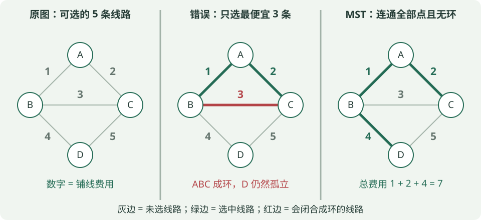
“生成树”和“最小”分别要求什么？
- 生成树： 保留原图的全部V个顶点，从原图选边，使它们连通且无环。因此恰有V−1条边。上图有4个点，生成树应选3条边。
- 最小： 在所有生成树中，所选边权之和最小。不是边数更少——每棵生成树本来就有V−1条边。
- 不能只挑最便宜的V−1条边： AB、AC、BC虽然最便宜，但在A、B、C之间成环，D还没接进来，不是一棵生成树。
对铺线费用为正的例子，环上删掉一条边仍然连通，还能省钱。但“无环”本身就是生成树的定义；即使题目允许负权，也仍要选树，不能为了降低费用把负权环全留下。
Kruskal：把所有边排序，能连接两块就选
先把每个顶点看成独立的一块，再按边权从小到大检查。两端已通过选中的边连通，就跳过；两端仍在不同块，就加入并合并两块。 因为两端之间已有路径时，再加一条边会闭合成环。程序中常用并查集检查两端是否属于同一块。
例题： 仍用上图，排序后为AB(1)、AC(2)、BC(3)、BD(4)、CD(5)。
| 考察的边 | 为什么选／不选 | 已选边形成的连通块 | 累计权重 |
|---|---|---|---|
| 初始 | 尚未选边 | {A}、{B}、{C}、{D} | 0 |
| AB(1) | A、B在不同块，选 | {A,B}、{C}、{D} | 1 |
| AC(2) | A、C在不同块，选 | {A,B,C}、{D} | 3 |
| BC(3) | 已有B→A→C，再加BC会成环，跳过 | {A,B,C}、{D} | 3 |
| BD(4) | 把D接入已有的ABC，选 | {A,B,C,D} | 7 |
已选满V−1=3条边，结束，不必再考察CD。结果是 AB、AC、BD，总权重1+2+4=7。判断成环看的是“是否已有一条路径”，不只是检查有没有同一条直接边。
Prim：从一个点长出一棵树，每次接入一个新点
设S是已经接入的顶点集合。每轮只在一端在S、另一端不在S的边里选最便宜的一条，再把外面的端点加入S。两端都在S会成环，两端都在S外则接不上当前这棵树。
例题：从D出发。 特意换个起点，看看Prim与Kruskal选择边的先后有什么不同：
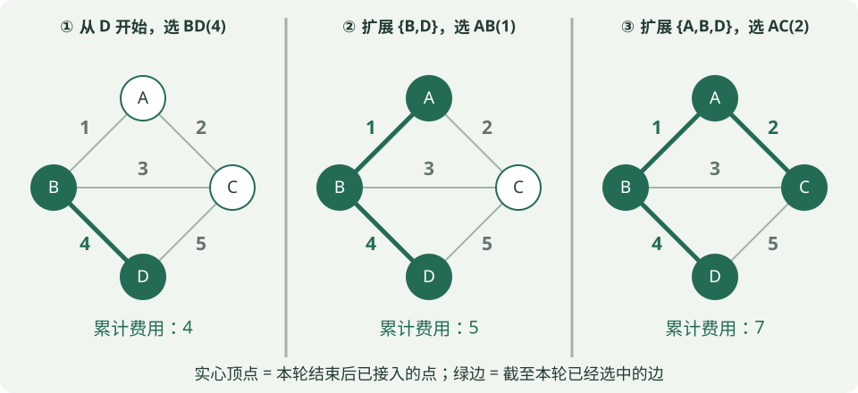
| 本轮开始的S | 合法候选：一端在S、一端在外 | 选哪条，为什么 | 新的S |
|---|---|---|---|
| {D} | BD(4)、CD(5) | 选BD(4)；AB(1)虽更便宜，但两端都没接进来 | {B,D} |
| {B,D} | AB(1)、BC(3)、CD(5) | 选AB(1) | {A,B,D} |
| {A,B,D} | AC(2)、BC(3)、CD(5) | 选AC(2)，接入最后一个点C | {A,B,C,D} |
总权重仍为 4+1+2=7。Prim每次看的是整个S的边界，不是只从“刚加入的那个点”往外挑。它的选边权重也不要求递增：这里就是4、1、2。
两种方法为什么敢选便宜边？ 可以把图切成“已经连成的一块”和“外部”两侧。任何生成树都必须有边跨过这个分界；选择跨界的最轻边是安全的：若某棵MST没有它，加上它会形成环，环上必有另一条跨界边，可用这条不更贵的边替换。Prim直接找S边界上的最轻边；Kruskal的排序与判环也保证每次加入的边满足这一安全条件。
最小生成树为什么不等于最短路？
仍看同一张图：原图C到D有直接边CD，距离5；MST中却要走C→A→B→D，距离2+1+4=7。 MST为了让铺设的线路总费用最低，舍弃了CD；它不保证每两点之间的行程最短。
| 做题时比较 | Kruskal | Prim |
|---|---|---|
| 每轮怎么选 | 所有边按权重排序，跳过成环边 | 在当前S与外部之间选最轻边 |
| 中途是什么形状 | 可以是多个分散的连通块，逐渐合并 | 始终是一棵连通的树，逐渐长大 |
| 常见实现复杂度 | 排序＋并查集，通常O(E log E) | 邻接矩阵O(V²)；邻接表＋二叉堆常见O((V+E) log V) |
选择题结论： 这里讨论无向带权图；负权不妨碍Kruskal／Prim。若原图不连通，就没有覆盖全图的一棵生成树，可分别求各块的最小生成树，合起来叫“最小生成森林”。所有边权互异时MST唯一；有相等边权时可能唯一，也可能不唯一，但所有MST的总权重相同。
读完这个知识点，接着练： 第5-43题
⑨ 拓扑排序：依赖先后与判环
有向边u→v表示u必须先于v。拓扑序须满足每条边的起点都排在终点之前；有向图存在拓扑序，当且仅当它无有向环（DAG）。算法可反复选入度为0的节点，输出并删除它的出边，让相应邻居入度减1。还有节点却找不到入度0者，说明有环。多个节点同时可选时，可能有多种合法序列。
例题： 只有边A→C、B→C、C→D。开始可选A或B，但二者都完成后C才可选，D必须在C之后，因此仅有 ABCD、BACD 两种拓扑序。ACBD不合法，因为B必须在C前。若再加D→A，出现A→C→D→A的环，就不存在拓扑序。
读完这个知识点，接着练： 第5-44题
题源与方法依据： 公开题型示例包括叶子节点计数、最小堆插入调整、拓扑排序。概念核对使用OpenDSA二叉树性质、Princeton的BST、堆、Huffman、图算法、最短路、MST、拓扑排序。这些资料支持题型与方法，不构成阿里实际考频统计；本节数值例题及新增练习均为自编。
4. 排序、稳定性与二分的常见坑
稳定排序保留相同关键字元素原来的相对顺序。例如 [2甲,1,2乙] 按数字升序稳定排序后应为 [1,2甲,2乙]；甲、乙只是区分两个同值元素，不参与比较。稳定不代表“速度稳定”，也不代表“原地”。原地通常指只使用常数级辅助存储；递归算法还要单独考虑调用栈。
下面都按升序排列数组 [4,2,1,3]，看四种算法各自在做什么。
① 快速排序：先选基准，把两侧分开
选一个数作基准pivot，通过分区把小的移到左边、大的移到右边，再递归处理左右两部分。下面采用一种常见分区方式：取末尾元素作基准，扫描时把小于等于基准的元素交换到左侧，最后把基准放到两部分之间。
例题： 基准取3。从左到右扫描：4>3，先不动；2≤3，将2与左侧的4交换；1≤3，再将1与4交换；最后交换4与基准3：
开始： [4,2,1,3] 基准是末尾的3
把2换到左侧： [2,4,1,3]
把1换到左侧： [2,1,4,3]
把基准放中间： [2,1] | 3 | [4]
递归排左侧： [1,2] | 3 | [4]
一次分区只保证两侧与基准的大小关系，两侧内部还不一定有序，例如上面的 [2,1]。不同分区实现可能产生不同中间数组，手算题应按题设的基准和交换规则。
复杂度与稳定性： 一轮扫描O(n)，划分较均衡时约有log n层，平均O(n log n)。若每次都分成0和n−1个元素，就要扫描n、n−1、n−2……，最坏O(n²)。例如升序数组总选末尾最大值就可能退化。普通递归实现的栈空间平均O(log n)、最坏O(n)；原地交换分区通常不稳定，远距离交换可能颠倒同值元素的先后。随机选基准能降低坏划分的风险，不代表最坏情况消失。
② 归并排序：先拆成小段，再合并有序段
把数组不断分成两半，直到每段只有一个元素；单元素天然有序。然后逐层合并两个有序段：比较两段当前最前面的元素，把较小者放进结果，再移动对应指针。
例题：
拆分： [4,2,1,3] → [4,2] [1,3] → [4] [2] [1] [3]
合并： [4]与[2] → [2,4]；[1]与[3] → [1,3]
最后： [2,4]与[1,3] → [1,2,3,4]
最后一次合并具体是：比较2和1，取1；比较2和3，取2；比较4和3，取3；右段耗尽，把左段剩下的4接上。不是把两个有序段直接拼接。
复杂度与稳定性： 拆分约log n层，每层合并共处理n个元素，所以平均、最坏均O(n log n)。常见数组实现需要O(n)辅助数组。合并时遇到相等值先取左段的元素，就能保持原先顺序，实现稳定排序；若总先取右段，相等元素就可能被颠倒。
③ 堆排序：反复把最大的数放到末尾
升序的常见原地堆排序先建最大堆，让堆顶是当前最大值。然后把堆顶与未排序区最后一个元素交换，缩小堆的范围，再让新堆顶下沉恢复最大堆。右边排好的部分不再参与堆调整。
例题： 数组按层序存储，竖线右边表示已排好的后缀。
原数组： [4,2,1,3]
自底向上建最大堆： [4,3,1,2] 2与孩子3交换
将堆顶4换到末尾： [2,3,1 | 4]
剩余部分恢复最大堆： [3,2,1 | 4]
将堆顶3换到未排序区末尾：[1,2 | 3,4]
剩余部分恢复最大堆： [2,1 | 3,4]
再将堆顶2换到末尾： [1 | 2,3,4] 完成
复杂度与稳定性： 自底向上建堆O(n)，之后反复取顶并下沉，每轮最多O(log n)，总时间平均、最坏均O(n log n)。使用迭代下沉时额外空间O(1)。堆顶与末尾的远距离交换可能改变同值顺序，因此通常不稳定。
容易混淆： 要取最小值可以用最小堆；但这里是把取出的数直接放在数组右端，所以升序用最大堆，把最大的先放到最右边。
④ 插入排序：维护左侧有序区，把新数插进去
像整理手里的扑克牌：左侧已经有序，每次拿出右侧的第一个数，将左侧比它大的数逐个右移，空出位置后插入。不是只交换一次就结束。
例题： 竖线左边是已排好的前缀。
开始： [4 | 2,1,3]
插入2： [2,4 | 1,3] 4右移，2放到前面
插入1： [1,2,4 | 3] 4、2依次右移，1放到前面
插入3： [1,2,3,4 | ] 4右移，遇到2≤3就停止
复杂度与稳定性： 平均、最坏O(n²)；逆序时第2个元素要越过1个数，第3个越过2个……，共约n(n−1)/2次移动。已有序时，每次发现前一个数不大于当前数便停止，最好O(n)，因此适合小规模或接近有序的数据。额外空间O(1)。只移动严格大于当前值的元素，不跨过相等元素，就能保持稳定。
四种排序的速记对照
| 常见实现 | 平均时间 | 最坏时间 | 额外空间 | 稳定性 |
|---|---|---|---|---|
| 快排 | 普通递归栈平均O(log n)，最坏O(n) | 通常不稳定 | ||
| 数组归并 | O(n) | 相等时先取左段，可稳定 | ||
| 堆排序 | 迭代调整O(1) | 通常不稳定 | ||
| 插入排序 | O(1) | 只右移严格更大元素，可稳定；已有序时O(n) |
四句记法： 快排“基准分两边”；归并“拆开再合并”；堆排序“最大值送末尾”；插入排序“新元素插进有序前缀”。这里讲常见实现，特殊变体和库实现按题设。
二分查找还要注意边界：在升序数组 [1,2,2,4] 中，找“第一个不小于2的位置”应返回下标1（从0开始），而找“任意等于2的位置”可以返回1或2，二者目标不同。
读完这个知识点，接着练： 第5-16题
5. B-tree与B+树：多路搜索与范围扫描
① B-tree：一个节点放多个键，降低树高
B-tree（B树）是平衡的多路搜索树，不是二叉搜索树BST。 BST一个节点通常放一个键，分左右两个方向；B-tree一个节点可放多个排好序的键，把取值分成多个区间。所有叶子在同一层，节点有最低占用要求，避免树变成长链。
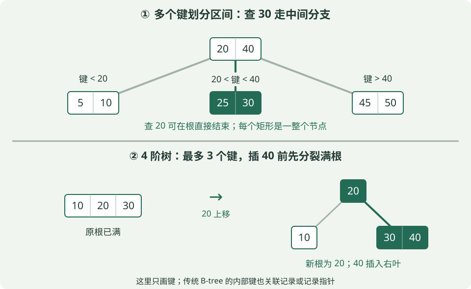
看上半图查30： 根是 [20 | 40]，30在20与40之间，沿中间指针到 [25 | 30] 即可找到。查20则可直接在根命中；传统B-tree的内部节点也可保存记录或记录指针。一次访问一个节点不等于只做一次键比较。
为什么适合磁盘索引？ 一个节点通常对应一个存储页，读一次页就能拿到一组键并确定下一页。分支多，树就矮，查找需要经过的页更少；实际磁盘读次数还取决于哪些页已经缓存在内存中。
阶数题先看定义。 本节约定“m阶”是每个节点最多m个孩子，不是最多m个键：
| 节点 | 孩子数 | 键数 |
|---|---|---|
| 非根内部节点 | 至少⌈m/2⌉，至多m | 至少⌈m/2⌉−1，至多m−1 |
| 非空树的内部根节点 | 至少2，至多m | 至少1，至多m−1 |
| 非根叶节点 | 0 | 至少⌈m/2⌉−1，至多m−1 |
内部节点有k个键，就有k+1个孩子，对应k+1段区间。只有根的非空树可放1～m−1个键。教材若用“最小度数t”，常见上限是2t个孩子、2t−1个键；不要把t直接当成这里的m。
插入与删除怎么保持平衡？ 插入时找到目标叶，满了要分裂并把中间键上移；父节点也满则继续向上，根分裂会增加一层。删除后若不足最低键数，需经父节点向相邻兄弟借键，或合并节点；影响可能继续向上传播。
例题1（分裂）： 上图下半部分采用4阶B-tree的“下降前分裂满节点”方法。根 [10 | 20 | 30] 已满，插40前先把20升为新根，得到左叶 [10] 和右叶 [30]，再把40放进右叶，成为 [30 | 40]。20从原节点移到父节点，叶子不重复保留20。
例题2（计数）： 5阶B-tree的非根内部节点至少有⌈5/2⌉=3个孩子，因此至少2个键；最多5个孩子、4个键。答“至少2个孩子”是把取整方向弄错了。
依据：Cornell B-tree课程讲义。数值与图示为本课程自编。
读完这个知识点，接着练： 第5-49题
② B+树与数据库索引：范围查询为什么方便
B+树是B-tree家族的重要变体。做比较题时，先抓下面两点：
| 对比 | 传统B-tree | 常见B+树 |
|---|---|---|
| 记录／记录指针放哪 | 内部节点和叶节点都可以存 | 叶层保存全部记录项；内部节点只做导航 |
| 查找与范围扫描 | 查找可能在内部节点结束；范围查询也能做 | 查找记录要下到叶层；叶节点按键顺序链接，方便连续扫描 |
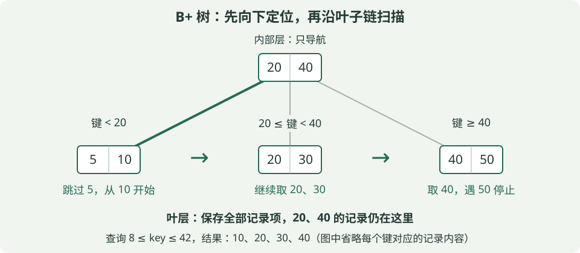
上图约定内部键是右侧子树的最小键：小于20走左边，20≤键＜40走中间，键≥40走右边。根的20、40是导航用的副本，叶子中仍保留这些键对应的记录项；这和前面B-tree中间键“上移后不留在叶子”的例子不同。实际教材可能采用不同分隔键约定，看题目定义。
例题1（范围）： 查询8≤key≤42。先从根定位到含下界的左叶，跳过5，从10开始；沿叶子链扫描20、30、40，见到50超过上界便停止。结果是 10、20、30、40。只需定位一次起点，再顺序扫描，不必为每个键重新从根查找。
例题2（容量）： 假设B+树每个内部节点最多100个孩子，每个叶子最多100条记录，树共3层（根→内部节点→叶）。满载最多有 100×100=10000 个叶子、10000×100=1000000 条记录。根在第1层，只有两次分叉，不能误算成100³个叶子。若每节点恰占一页、只缓存根且不计回表，一次点查沿途仍需读2页；实际不一定满载，也不一定发生两次物理I/O。
这种“内部页只放导航信息、叶层顺序相连”的结构，有利于增加分支数并处理范围查询。参见Cornell的B树家族与局部性讲解。
合上讲义自检： BST、堆和B树各保持什么性质？怎样手算BFS、最短路与MST？如何判断排序的稳定性？B+树为什么适合范围扫描？
读完这个知识点，接着练： 第5-50题
配套练习 · 32题
先答题，再看逐项解析；多选须全部选对。可筛选错题、记录把握程度并导出答题记录。
关于时间复杂度，哪些正确？
无脚本阅读：查看答案与解析
正确答案：ACD- A正确：处理次数与元素数线性增长。
- B错误：二分每次范围约减半，通常O(log n)。
- C正确：两层各n次，约n×n。
- D正确：插入还可能移动O(n)个元素。
- A正确：处理次数与元素数线性增长。
- B错误：二分每次范围约减半，通常O(log n)。
- C正确：两层各n次，约n×n。
- D正确：插入还可能移动O(n)个元素。
先把1、2、3全部依次入栈，再全部出栈；另把1、2、3全部依次入队，再全部出队。两个输出顺序分别是什么？
无脚本阅读：查看答案与解析
正确答案：C- A错误：恰好把LIFO和FIFO反过来。
- B错误：栈最后入的3应先出。
- C正确：栈后进先出321，队列先进先出123。
- D错误：普通队列应先取最早进入的1。
- A错误：恰好把LIFO和FIFO反过来。
- B错误：栈最后入的3应先出。
- C正确：栈后进先出321，队列先进先出123。
- D错误：普通队列应先取最早进入的1。
关于数组、链表、哈希表，哪些正确？
无脚本阅读：查看答案与解析
正确答案：AC- A正确：可直接计算位置。
- B错误：通常需要沿指针逐步走，最坏O(n)。
- C正确：这是省去定位成本后的特定操作；须看节点与链表类型。
- D错误：冲突等可导致退化，应区分平均与最坏。
- A正确：可直接计算位置。
- B错误：通常需要沿指针逐步走，最坏O(n)。
- C正确：这是省去定位成本后的特定操作；须看节点与链表类型。
- D错误：冲突等可导致退化，应区分平均与最坏。
关于BST与最小堆，哪些正确？
无脚本阅读：查看答案与解析
正确答案：AB- A正确：若不做平衡维护，高度可能线性增长。
- B正确：堆序保证父节点不大于孩子，从根可推出全局最小。
- C错误：堆只维护局部父子关系，不保证全局排序。
- D错误：二叉树是每个节点最多两个孩子。
- A正确：若不做平衡维护，高度可能线性增长。
- B正确：堆序保证父节点不大于孩子，从根可推出全局最小。
- C错误：堆只维护局部父子关系，不保证全局排序。
- D错误：二叉树是每个节点最多两个孩子。
关于图遍历与最短路，哪些正确？
无脚本阅读：查看答案与解析
正确答案：AC- A正确：逐层扩展对应路径边数递增。
- B错误：经典Dijkstra依赖非负边权。
- C正确：先进先出支持逐层探索。
- D错误：DFS优先深入，首次找到的路径未必最短。
- A正确：逐层扩展对应路径边数递增。
- B错误：经典Dijkstra依赖非负边权。
- C正确：先进先出支持逐层探索。
- D错误：DFS优先深入，首次找到的路径未必最短。
关于常见排序实现，哪些正确？
无脚本阅读：查看答案与解析
正确答案：AB- A正确：归并时对相等键保持原顺序可实现稳定，常用O(n)辅助空间。
- B正确：极不均匀分区可能退化。
- C错误：普通堆排序通常不稳定。
- D错误：稳定指相同关键字元素的原有相对顺序保留。
- A正确：归并时对相等键保持原顺序可实现稳定，常用O(n)辅助空间。
- B正确：极不均匀分区可能退化。
- C错误：普通堆排序通常不稳定。
- D错误：稳定指相同关键字元素的原有相对顺序保留。
【数组移动】长度12的顺序表，下标从0开始，保持元素顺序且容量足够。分别从原表在下标4插入、删除下标4，需移动多少个旧元素？两次操作相互独立。
无脚本阅读：查看答案与解析
正确答案：B- A错误：把插入和删除的移动范围颠倒了。
- B正确：插入需后移原下标4～11，共12−4=8个；删除需前移原下标5～11，共12−4−1=7个。
- C错误：下标已经从0开始，不需要再把4减1。
- D错误：移动的是指定位置后面的元素，不是前面4个。
- A错误：把插入和删除的移动范围颠倒了。
- B正确：插入需后移原下标4～11，共12−4=8个；删除需前移原下标5～11，共12−4−1=7个。
- C错误：下标已经从0开始，不需要再把4减1。
- D错误：移动的是指定位置后面的元素，不是前面4个。
【数组地址】A是5行6列的连续数组，按行优先存储，下标从0开始，每元素8 byte，A[0][0]地址2000。A[3][2]的地址是多少？
无脚本阅读：查看答案与解析
正确答案：C- A错误：漏计了完整行所占的元素数。
- B错误：2104=2000+(2×5+3)×8，这是本题按列优先时的计算。
- C正确：前面有3整行和本行前2个，共3×6+2=20个元素；地址2000+20×8=2160。
- D错误：偏移为20个元素，不是22个。
- A错误：漏计了完整行所占的元素数。
- B错误：2104=2000+(2×5+3)×8，这是本题按列优先时的计算。
- C正确：前面有3整行和本行前2个，共3×6+2=20个元素；地址2000+20×8=2160。
- D错误：偏移为20个元素，不是22个。
【链表指针】单链表中p.next原来指向q，s是独立的新节点，要把s插入p与q之间。哪些判断正确？
无脚本阅读：查看答案与解析
正确答案：AC- A正确：先让s保存原后继q，再把p接到s，得到p→s→q。
- B错误：第一句后p.next已是s，第二句就把s.next设为s，形成自环。
- C正确：已知p后只做固定次数的指针修改，不计寻找p的成本。
- D错误：若还要从表头遍历寻找位置，最坏需O(n)。
- A正确：先让s保存原后继q，再把p接到s，得到p→s→q。
- B错误：第一句后p.next已是s，第二句就把s.next设为s，形成自环。
- C正确：已知p后只做固定次数的指针修改，不计寻找p的成本。
- D错误：若还要从表头遍历寻找位置，最坏需O(n)。
【出栈合法性】1、2、3、4依次入一个栈，允许进出交错，每个元素恰好入栈、出栈一次。以下哪个出栈序列不可能？
无脚本阅读：查看答案与解析
正确答案：D- A错误（本项可实现）：压1、2弹2、1；压3、4弹4、3。
- B错误（本项可实现）：压1、2弹2；压3弹3；压4弹4；最后弹1。
- C错误（本项可实现）：全部压入后逆序弹出即可。
- D正确（本项不可能）：先弹3要求先压1、2、3；弹3后栈顶为2，挡着1，不能先弹1。
- A错误（本项可实现）：压1、2弹2、1；压3、4弹4、3。
- B错误（本项可实现）：压1、2弹2；压3弹3；压4弹4；最后弹1。
- C错误（本项可实现）：全部压入后逆序弹出即可。
- D正确（本项不可能）：先弹3要求先压1、2、3；弹3后栈顶为2，挡着1，不能先弹1。
【最小栈容量】输入顺序1、2、3、4、5，要求输出3、2、1、5、4，允许进出交错。栈至少能容纳几个元素？
无脚本阅读：查看答案与解析
正确答案：B- A错误：为了第一个输出3，必须先同时压入1、2、3，容量2不够。
- B正确：先压1、2、3再弹3、2、1，深度达到3；再压4、5弹5、4，最大深度仍为3。
- C错误：容量4足够，但不是最小值。
- D错误：不要求5个元素全部同时在栈内。
- A错误：为了第一个输出3，必须先同时压入1、2、3，容量2不够。
- B正确：先压1、2、3再弹3、2、1，深度达到3；再压4、5弹5、4，最大深度仍为3。
- C错误：容量4足够，但不是最小值。
- D错误：不要求5个元素全部同时在栈内。
【出栈序列计数】4个互异元素按固定顺序入一个容量无限的栈，允许任意合法进出交错，每个元素恰进出一次。不同出栈序列共有多少种？
无脚本阅读：查看答案与解析
正确答案：C- A错误：5是3个互异元素时的卡特兰数。
- B错误：不能简单把4!除以2来计数。
- C正确：；这里满足固定输入顺序、互异元素、无限容量的条件。
- D错误：4!=24是所有排列，部分排列不能由单栈产生。
- A错误：5是3个互异元素时的卡特兰数。
- B错误：不能简单把4!除以2来计数。
- C正确：；这里满足固定输入顺序、互异元素、无限容量的条件。
- D错误：4!=24是所有排列，部分排列不能由单栈产生。
【后缀表达式】按通常算术运算，后缀表达式“12 5 2 - / 3 +”的值是多少？
无脚本阅读：查看答案与解析
正确答案：A- A正确：5 2 -先得3；12 3 /得4；4 3 +得7。遇运算符时先弹出的数是右操作数。
- B错误：若把5−2反成2−5，会得到−3，再误算成−1。
- C错误：必须按后缀的栈顺序计算，不能忽略除法步骤。
- D错误：中间的12除以3是4，最后加3得到7。
- A正确：5 2 -先得3；12 3 /得4；4 3 +得7。遇运算符时先弹出的数是右操作数。
- B错误：若把5−2反成2−5，会得到−3，再误算成−1。
- C错误：必须按后缀的栈顺序计算，不能忽略除法步骤。
- D错误：中间的12除以3是4，最后加3得到7。
【循环队列变化】数组长度M=10，留一空槽，front指队头，rear指下一入队位置。初始front=8、rear=3。先成功入队3次，再出队2次，最终(front,rear,元素数)为？
无脚本阅读：查看答案与解析
正确答案：D- A错误：初始元素数为(3−8+10)%10=5，增加3再减少2后应为6。
- B错误：只计算了入队，没有更新两次出队后的front。
- C错误：front到达10时必须对10取模，绕回0。
- D正确：rear=(3+3)%10=6；front=(8+2)%10=0；元素数(6−0+10)%10=6。过程中容量最多8，不超过上限9。
- A错误：初始元素数为(3−8+10)%10=5，增加3再减少2后应为6。
- B错误：只计算了入队，没有更新两次出队后的front。
- C错误：front到达10时必须对10取模，绕回0。
- D正确：rear=(3+3)%10=6；front=(8+2)%10=0；元素数(6−0+10)%10=6。过程中容量最多8，不超过上限9。
【循环队列判满】数组长度6，留一空槽；front指队头，rear指下一入队位置。front=2、rear=1时，元素数和能否再入队为？
无脚本阅读：查看答案与解析
正确答案：C- A错误：rear小于front表示可能已经绕回，不能只看二者差的绝对值。
- B错误：(1−2+6)%6=5，不是4。
- C正确：占5个槽，达到最大容量6−1；且(rear+1)%6=2=front，已经满。
- D错误：留一空槽的约定下最多存5个，不是6个。
- A错误：rear小于front表示可能已经绕回，不能只看二者差的绝对值。
- B错误：(1−2+6)%6=5，不是4。
- C正确：占5个槽，达到最大容量6−1；且(rear+1)%6=2=front，已经满。
- D错误：留一空槽的约定下最多存5个，不是6个。
【线性探测与成功ASL】空哈希表长7，下标0～6，h(k)=k%7，依次插入6、13、1，冲突后逐格向后并循环。每访问一个槽计一次。三个现存键等概率被查，成功ASL为？
无脚本阅读：查看答案与解析
正确答案：B- A错误：13与6发生冲突，查找13需两次探测。
- B正确：6放槽6，13从6绕到0，1直接放槽1；成功查找次数分别1、2、1，平均(1+2+1)/3=4/3。
- C错误：不能把最长探测次数2当作平均值。
- D错误：只平均实际查找6、13、1的次数，不用表长7作分子。
- A错误：13与6发生冲突，查找13需两次探测。
- B正确：6放槽6，13从6绕到0，1直接放槽1；成功查找次数分别1、2、1，平均(1+2+1)/3=4/3。
- C错误：不能把最长探测次数2当作平均值。
- D错误：只平均实际查找6、13、1的次数，不用表长7作分子。
【失败ASL】表长7，h(k)=k%7，线性探测；槽6、0、1分别存6、13、1，其余从未占用。不存在的键，其初始地址在0～6等概率。访问最后空槽也算一次，失败ASL为？
无脚本阅读：查看答案与解析
正确答案：D- A错误：4/3是这三个现存键的成功ASL，不能用于失败查询。
- B错误：从每条探测路径中漏掉了最后的空槽访问，少计7次。
- C错误：并非所有起点都要访问3个槽，要逐个起点计数。
- D正确：起点0～6的次数依次为3、2、1、1、1、1、4；起点6走6→0→1→2。总计13次，除以7得13/7。
- A错误：4/3是这三个现存键的成功ASL，不能用于失败查询。
- B错误：从每条探测路径中漏掉了最后的空槽访问，少计7次。
- C错误：并非所有起点都要访问3个槽，要逐个起点计数。
- D正确：起点0～6的次数依次为3、2、1、1、1、1、4；起点6走6→0→1→2。总计13次，除以7得13/7。
【哈希删除】线性探测表长7，h(k)=k%7，先插6再插13，分别位于槽6和0。现在删除6，哪些做法或判断正确？
无脚本阅读：查看答案与解析
正确答案：AB- A正确：13的初始地址也是6，若在首槽遇到真正空槽就停，会漏掉槽0的13。
- B正确：删除标记表示此处曾被使用，查询不能就此终止；也可采用正确重整探测簇的方法。
- C错误：删除标记不能当作从未占用的空槽。
- D错误：冲突会增加探测次数，极端情况下最坏可达O(n)。
- A正确：13的初始地址也是6，若在首槽遇到真正空槽就停，会漏掉槽0的13。
- B正确：删除标记表示此处曾被使用，查询不能就此终止；也可采用正确重整探测簇的方法。
- C错误：删除标记不能当作从未占用的空槽。
- D错误：冲突会增加探测次数，极端情况下最坏可达O(n)。
【二叉树计数】非空二叉树有12个叶子、5个单孩子节点，总节点数是多少？
无脚本阅读：查看答案与解析
正确答案：C- A错误：17只加了叶子和单孩子节点，漏掉双孩子节点。
- B错误：23只加了叶子12与双孩子节点11，漏掉5个单孩子节点。
- C正确：双孩子节点数=12−1=11；总数12+5+11=28。
- D错误：叶子比双孩子节点多1，不是二者一样多。
- A错误：17只加了叶子和单孩子节点，漏掉双孩子节点。
- B错误：23只加了叶子12与双孩子节点11，漏掉5个单孩子节点。
- C正确：双孩子节点数=12−1=11；总数12+5+11=28。
- D错误：叶子比双孩子节点多1，不是二者一样多。
【完全二叉树】20个节点的完全二叉树，根在第1层，层序从1编号。层数、叶子数、单孩子节点数依次是多少？
无脚本阅读：查看答案与解析
正确答案：A- A正确：前4层最多15个，第5层还有5个；节点1～10有孩子，11～20为叶子。节点10只有左孩子20，故单孩子节点1个。
- B错误：4层最多15个，放不下20个；节点10只有一个孩子。
- C错误：叶子数为20−⌊20/2⌋=10，双孩子节点有9个，而非10个。
- D错误：完全二叉树至多一个单孩子节点，本题就是节点10。
- A正确：前4层最多15个，第5层还有5个；节点1～10有孩子，11～20为叶子。节点10只有左孩子20，故单孩子节点1个。
- B错误：4层最多15个，放不下20个；节点10只有一个孩子。
- C错误：叶子数为20−⌊20/2⌋=10，双孩子节点有9个，而非10个。
- D错误：完全二叉树至多一个单孩子节点，本题就是节点10。
【遍历还原】节点互异，先序为ABDEC，中序为DBEAC，后序是什么？
无脚本阅读：查看答案与解析
正确答案：D- A错误：左子树根B应在D、E之后输出，不应夹在中间。
- B错误：整棵树的根A应最后输出。
- C错误：这是题目给的中序，不是后序。
- D正确：根A；左子树中序DBE、根B且孩子D/E，右子树只有C；后序DEB+C+A=DEBCA。
- A错误：左子树根B应在D、E之后输出，不应夹在中间。
- B错误：整棵树的根A应最后输出。
- C错误：这是题目给的中序，不是后序。
- D正确：根A；左子树中序DBE、根B且孩子D/E，右子树只有C；后序DEB+C+A=DEBCA。
【BST查找】向空的普通BST依次插入6、3、8、2、5、7、9，键互异。查找5时，访问一个节点计一次，需访问几次？
无脚本阅读：查看答案与解析
正确答案：B- A错误：访问6后还要访问3，才能到达5。
- B正确：5<6向左到3，5>3向右到5，路径6→3→5，共3次。
- C错误：根在第1层，目标在第3层，实际只访问三个节点。
- D错误：查找不需要遍历所有小于等于5的键。
- A错误：访问6后还要访问3，才能到达5。
- B正确：5<6向左到3，5>3向右到5，路径6→3→5，共3次。
- C错误：根在第1层，目标在第3层，实际只访问三个节点。
- D错误：查找不需要遍历所有小于等于5的键。
【堆插入】最小堆按层序存为[3,6,5,9,8]。把2追加末尾并按标准上浮调整，最终数组为？
无脚本阅读：查看答案与解析
正确答案：C- A错误：这是全排序，标准堆插入不会顺便对全部元素排序。
- B错误：2与父节点5交换后，还小于根3，仍需继续上浮。
- C正确：追加后2在下标5，先与父节点下标2的5交换，再与根3交换，得到[2,6,3,9,8,5]。
- D错误：上浮只沿新节点到根的路径交换，不会把原来下标1的6移到下标2。
- A错误：这是全排序，标准堆插入不会顺便对全部元素排序。
- B错误：2与父节点5交换后，还小于根3，仍需继续上浮。
- C正确：追加后2在下标5，先与父节点下标2的5交换，再与根3交换，得到[2,6,3,9,8,5]。
- D错误：上浮只沿新节点到根的路径交换，不会把原来下标1的6移到下标2。
【Top-k】按顺序读入4、10、2、8、6，用大小3的堆保留最大的3个数。最终应使用哪种堆，堆顶为多少？
无脚本阅读：查看答案与解析
正确答案：A- A正确：先留2、4、10；8替换门槛2，6再替换门槛4，最终留下6、8、10，最小堆顶6就是第3大。
- B错误：最大堆顶10不是当前应淘汰的最小入选者；大小k的最大堆通常用于保留最小k个。
- C错误：2早已被8淘汰，最后不是门槛。
- D错误：最终三数中最大值为10，最大堆顶也不会是6。
- A正确：先留2、4、10；8替换门槛2，6再替换门槛4，最终留下6、8、10，最小堆顶6就是第3大。
- B错误：最大堆顶10不是当前应淘汰的最小入选者；大小k的最大堆通常用于保留最小k个。
- C错误：2早已被8淘汰，最后不是门槛。
- D错误：最终三数中最大值为10，最大堆顶也不会是6。
【哈夫曼WPL】叶子权值为1、2、4、8，用二叉哈夫曼算法构造树，带权路径长度是多少？
无脚本阅读：查看答案与解析
正确答案：D- A错误：15只是根的权值，漏计之前的合并。
- B错误：应每一步都合并当前最小的两个权值。
- C错误：逐步合并得到3、7、15，合计应为25。
- D正确：1+2=3；3+4=7；7+8=15。WPL=3+7+15=25，也等于1×3+2×3+4×2+8×1。
- A错误：15只是根的权值，漏计之前的合并。
- B错误：应每一步都合并当前最小的两个权值。
- C错误：逐步合并得到3、7、15，合计应为25。
- D正确：1+2=3；3+4=7；7+8=15。WPL=3+7+15=25，也等于1×3+2×3+4×2+8×1。
【图的计数】简单无向图有8个顶点，度数和20。实际边数与最多可能边数分别为？
无脚本阅读：查看答案与解析
正确答案：B- A错误：每条无向边贡献两个度；56则把无向点对重复计数了。
- B正确：实际E=20/2=10；最多8×7/2=28条，要求无自环、无重边。
- C错误：56是允许两个方向都存在的简单有向图最大边数。
- D错误：28正确，但实际边数需将度数和除以2。
- A错误：每条无向边贡献两个度；56则把无向点对重复计数了。
- B正确：实际E=20/2=10；最多8×7/2=28条，要求无自环、无重边。
- C错误：56是允许两个方向都存在的简单有向图最大边数。
- D错误：28正确，但实际边数需将度数和除以2。
【BFS手算】无向图仅有边AB、AC、BD、CD、DE、EF。从A开始，邻居按字母升序考察，BFS在入队时标记访问。访问顺序与A到F的最少边数为？
无脚本阅读：查看答案与解析
正确答案：C- A错误：ABDCEF可由递归DFS产生；BFS处理完B后应先处理已入队的C，再处理D。
- B错误：A→B→D→E→F含4条边，不是3条。
- C正确：层次为A／B,C／D／E／F，顺序ABCDEF，最少4条边。
- D错误：路径含5个顶点、4条边，不能把顶点数当边数。
- A错误：ABDCEF可由递归DFS产生；BFS处理完B后应先处理已入队的C，再处理D。
- B错误：A→B→D→E→F含4条边，不是3条。
- C正确：层次为A／B,C／D／E／F，顺序ABCDEF，最少4条边。
- D错误：路径含5个顶点、4条边，不能把顶点数当边数。
【Dijkstra】有向图仅有S→A(5)、S→B(2)、B→A(1)、A→T(2)、B→T(6)。从S到T的最短距离和路径为？
无脚本阅读：查看答案与解析
正确答案：A- A正确：确定S后A=5、B=2；确定B后A更新为3、T为8；确定A后T更新为3+2=5。
- B错误：7是有效路径代价，但经B再到A可以更短。
- C错误：8只是经B直接到T的暂定距离，还能被A更新。
- D错误：3只到A，还没有走A→T这条权为2的边。
- A正确：确定S后A=5、B=2；确定B后A更新为3、T为8；确定A后T更新为3+2=5。
- B错误：7是有效路径代价，但经B再到A可以更短。
- C错误：8只是经B直接到T的暂定距离，还能被A更新。
- D错误：3只到A，还没有走A→T这条权为2的边。
【最小生成树】无向连通图有边AB(2)、AC(3)、BC(4)、BD(6)、CD(7)。Kruskal得到的MST总权重为？
无脚本阅读：查看答案与解析
正确答案：D- A错误：2+3+4选了ABC三角形，形成环且没连接D。
- B错误：AB、AC、CD总权重12，但连接D可以改选更轻的BD。
- C错误：不需要把所有候选边都加入；生成树只取3条边。
- D正确：取AB(2)、AC(3)，跳过成环的BC(4)，再取BD(6)，总权重11。
- A错误：2+3+4选了ABC三角形，形成环且没连接D。
- B错误：AB、AC、CD总权重12，但连接D可以改选更轻的BD。
- C错误：不需要把所有候选边都加入；生成树只取3条边。
- D正确：取AB(2)、AC(3)，跳过成环的BC(4)，再取BD(6)，总权重11。
【拓扑排序】有向图仅含A→C、B→C、B→D、C→E、D→E。下列哪些是合法拓扑序？
无脚本阅读：查看答案与解析
正确答案：AB- A正确：A、B均在C前，B在D前，C、D均在E前，满足所有边。
- B正确：先B可释放D，选D后再选A、C、E，仍满足全部依赖。
- C错误：边B→C要求B先于C，此序列违反。
- D错误：边D→E要求D先于E，此序列把E放早了。
- A正确：A、B均在C前，B在D前，C、D均在E前，满足所有边。
- B正确：先B可释放D，选D后再选A、C、E，仍满足全部依赖。
- C错误：边B→C要求B先于C，此序列违反。
- D错误：边D→E要求D先于E，此序列把E放早了。
【B树阶数】约定m阶B-tree每个节点最多m个孩子。一棵7阶B-tree的非根内部节点，最少孩子数、最少键数、最多键数依次为？
无脚本阅读：查看答案与解析
正确答案：D- A错误：最少孩子应向上取整为4；最大7个孩子只对应6个键。
- B错误：前两项正确，但最多键数为m−1=6。
- C错误：ceil(7/2)=4，不能向下取整为3；内部节点的孩子数比键数多1。
- D正确：最少ceil(7/2)=4个孩子、3个键；最多7个孩子、6个键。根另有最低数量例外。
- A错误：最少孩子应向上取整为4；最大7个孩子只对应6个键。
- B错误：前两项正确，但最多键数为m−1=6。
- C错误：ceil(7/2)=4，不能向下取整为3；内部节点的孩子数比键数多1。
- D正确：最少ceil(7/2)=4个孩子、3个键；最多7个孩子、6个键。根另有最低数量例外。
【B+树容量与扫描】某B+树共3层（根→内部节点→叶），每个内部节点最多10个孩子，每叶最多20条记录。下列哪些判断正确？
无脚本阅读：查看答案与解析
正确答案：ACD- A正确：两级分叉最多10×10=100个叶子；记录容量100×20=2000。
- B错误：B+树内部键用于导航，全部记录项在叶层，导航副本不额外增加记录容量。
- C正确：叶子之间有序链接，避免为每个连续结果都从根重新定位。
- D正确：根无需再读，沿路径还需读取一个内部页和一个叶页；这里按题设的页访问模型计算。
- A正确：两级分叉最多10×10=100个叶子；记录容量100×20=2000。
- B错误：B+树内部键用于导航，全部记录项在叶层，导航副本不额外增加记录容量。
- C正确：叶子之间有序链接，避免为每个连续结果都从根重新定位。
- D正确：根无需再读，沿路径还需读取一个内部页和一个叶页；这里按题设的页访问模型计算。